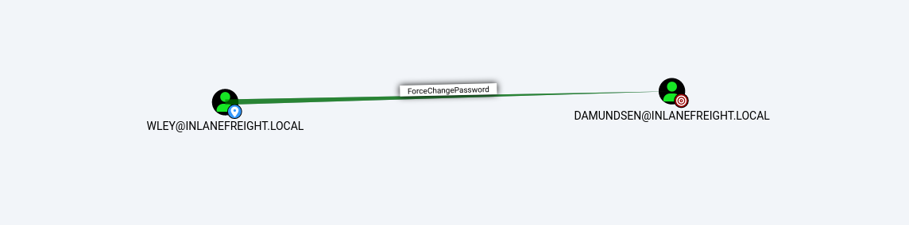

Privilege escalation in Active Directory from Windows
Resources
- [TheHacker.recipes](https://www.thehacker.recipes/ad/movement/dacl/forcechangepassword#forcechangepassword
Attacking from linux
Attacking from Windows
Kerberoasting
See about Kerberos authentication.
Kerberoasting is a lateral movement/privilege escalation technique in Active Directory environments.
Kerberoasting tools typically request RC4 encryption when performing the attack and initiating TGS-REQ requests. This is because RC4 is weaker and easier to crack offline using tools such as Hashcat than other encryption algorithms such as AES-128 and AES-256. Overall:
- RC4 (type 23) encryption: TGS hashes that begin with
$krb5tgs$23$* - AES-256 (type 18) encryption: TGS hashes that begin with
$krb5tgs$18$*
setspn.exe
1. Enumerating SPNs with setspn.exe
We will focus onuser accountsand ignore the computer accounts returned by the tool.
2. Using PowerShell, we can request TGS tickets for the interested account and load them into memory.
3. If needed, we could also retrieve all tickets:
4. Extract Tickets from Memory with Mimikatz
5. Next, we can take the base64 blob and remove new lines and white spaces since the output is column wrapped, and we need it all on one line for the next step.
6. We can place the above single line of output into a file and convert it back to a.kirbifile using thebase64utility.
7. Use kirbi2john.py:
This will create a file calledcrack_file. We then must modify the file a bit to be able to use Hashcat against the hash.
8. Cracking the Hash with Hashcat
If we decide to skip the base64 output with Mimikatz and typemimikatz # kerberos::list /export, the .kirbi file (or files) will be written to disk. In this case, we can download the file(s) and runkirbi2john.pyagainst them directly, skipping the base64 decoding step.
PowerView
Let's use PowerView to extract the TGS tickets and convert them to Hashcat format.
1. Enumerating SPNs with PowerView:
2. Generate a TGS ticker for a specific user:
3. Or obtain all SPN TGS tickets and export them to a CSV
Rubeus
Gather stats:
Request tickets with admincount attribute set to 1:
Perform Kerberoasting on a user testspn:
If the received TGS ticket is RC4 (type 23) encrypted, it will be easier to crack. We can check out if the user hast the msDS-SupportedEncryptionTypesattribute is set to0. The chartheretells us that a decimal value of0means that a specific encryption type is not defined and set to the default ofRC4_HMAC_MD5.
With RC4 (type 23) encryption, this would be the hashcat module:
The results for the AES-256 (type 18) encryption would be 24:
With AES (type 18) encryption, this would be the hashcat module:
We can use Rubeus with the/tgtdelegflag to specify that we want only RC4 encryption when requesting a new service ticket even though the supported encryption types are listed as AES 128/256. This may be a failsafe built-in to Active Directory for backward compatibility.
Note: This does not work against a Windows Server 2019 Domain Controller, regardless of the domain functional level. It will always return a service ticket encrypted with the highest level of encryption supported by the target account. This being said, if we find ourselves in a domain with Domain Controllers running on Server 2016 or earlier (which is quite common), enabling AES will not partially mitigate Kerberoasting by only returning AES encrypted tickets, which are much more difficult to crack, but rather will allow an attacker to request an RC4 encrypted service ticket. In Windows Server 2019 DCs, enabling AES encryption on an SPN account will result in us receiving an AES-256 (type 18) service ticket, which is substantially more difficult (but not impossible) to crack, especially if a relatively weak dictionary password is in use.
In addition, It is possible to edit the encryption types used by Kerberos. This can be done by opening Group Policy, editing the Default Domain Policy, and choosing: Computer Configuration > Policies > Windows Settings > Security Settings > Local Policies > Security Options, then double-clicking on Network security: Configure encryption types allowed for Kerberos and selecting the desired encryption type allowed for Kerberos. Removing all other encryption types except for RC4_HMAC_MD5 would allow for the above downgrade example to occur in 2019. Removing support for AES would introduce a security flaw into AD and should likely never be done.
Mitigating Kerberoasting
Kerberoasting requests Kerberos TGS tickets with RC4 encryption, which should not be the majority of Kerberos activity within a domain. When Kerberoasting is occurring in the environment, we will see an abnormal number of TGS-REQ and TGS-REP requests and responses, signaling the use of automated Kerberoasting tools.
omain controllers can be configured to log Kerberos TGS ticket requests by selectingAudit Kerberos Service Ticket Operationswithin Group Policy. Doing so will generate two separate event IDs:
10-20 Kerberos TGS requests for a given account can be considered normal in a given environment. A large amount of 4769 event IDs from one account within a short period may indicate an attack.
Some other remediation steps include restricting the use of the RC4 algorithm, particularly for Kerberos requests by service accounts. This must be tested to make sure nothing breaks within the environment. Furthermore, Domain Admins and other highly privileged accounts should not be used as SPN accounts (if SPN accounts must exist in the environment).
Kerberos: Forging the PAC
This was a flaw in the Kerberos protocol, which could be leveraged along with standard domain user credentials to elevate privileges to Domain Admin. A Kerberos ticket contains information about a user, including the account name, ID, and group membership in the Privilege Attribute Certificate (PAC). The PAC is signed by the KDC using secret keys to validate that the PAC has not been tampered with after creation.
The vulnerability allowed a forged PAC to be accepted by the KDC as legitimate. It can be exploited with tools such as thePython Kerberos Exploitation Kit (PyKEK)or the Impacket toolkit.
Kerberos Constrained Delegation [PENDING]
Kerberos Unconstrained Delegation [PENDING]
Kerberos Resource-Based Constrained Delegation (RBCD) [PENDING]
Kerberos "Double Hop" Problem
Kerberos "Double Hop" Problem: The "Double Hop" problem often occurs when using WinRM/Powershell or Evil-WinRM, since the default authentication mechanism only provides a ticket to access a specific resource (winrm). When we use Kerberos to establish a remote session, we are not using a password for authentication, and the user's ticket-granting service (TGS) ticket is sent to the remote service, but the TGT ticket is not sent. Therefore, when we try to authenticate over a second resource, the machine can not pull any hash from memory or generate any TGS to authenticate us.
In a nutshell, Kerberos "Double Hop" Problem arises when we try to issue a multi-server command, our credentials will not be sent from the first machine to the second, as the user's password was never cached as part of their login. In other words, when authenticating to the target host, the user's ticket-granting service (TGS) ticket is sent to the remote service, which allows command execution, but the user's TGT ticket is not sent. When the user attempts to access subsequent resources in the domain, their TGT will not be present in the request, so the remote service will have no way to prove that the authentication attempt is valid, and we will be denied access to the remote service.
Example once we are connected with Evil-WinRm:
However this does not happen with DRP connections, whereas our TGT is sent during the authentication process to obtain a service ticket for the RDP session. It is then cached on the remote host for subsequent use. This allows seamless access to domain resources from the remote host.
Workaround #1: unconstrained delegation
If unconstrained delegation is enabled on a server, it is likely we won't face the "Double Hop" problem. In this scenario, when a user sends their TGS ticket to access the target server, their TGT ticket will be sent along with the request. The target server now has the user's TGT ticket in memory and can use it to request a TGS ticket on their behalf on the next host they are attempting to access.
Workaround #2: Evil-WinRM and PSCredential Object
We can use a "nested" Invoke-Command to send credentials (after creating a PSCredential object) with every request.
Workaround #3: Win-RM and Register PSSession Configuration
Note: We cannot use
Register-PSSessionConfigurationfrom an evil-winrm shell because we won't be able to get the credentials popup. Furthermore, if we try to run this by first setting up a PSCredential object and then attempting to run the command by passing credentials like-RunAsCredential $Cred, we will get an error because we can only useRunAsfrom an elevated PowerShell terminal. Therefore, this method will not work via an evil-winrm session as it requires GUI access and a proper PowerShell console. Furthermore, in our testing, we could not get this method to work from PowerShell on a Parrot or Ubuntu attack host due to certain limitations on how PowerShell on Linux works with Kerberos credentials.
Due to the double hop problem, we can only interact with resources in our current session but cannot access the DC directly using PowerView. One trick we can use here is registering a new session configuration using theRegister-PSSessionConfigurationcmdlet.
Access Control List (ACL)Abuse
See more about Access Control List.
During an assessment where the client has taken care of all of the "low hanging fruit" AD flaws/misconfigurations, ACL abuse can be a great way for us to move laterally/vertically and even achieve full domain compromise.
Some example Active Directory object security permissions are as follows.
ForceChangePasswordabused withSet-DomainUserPasswordAdd Membersabused withAdd-DomainGroupMemberGenericAllabused withSet-DomainUserPasswordorAdd-DomainGroupMemberGenericWriteabused withSet-DomainObjectWriteOwnerabused withSet-DomainObjectOwnerWriteDACLabused withAdd-DomainObjectACLAllExtendedRightsabused withSet-DomainUserPasswordorAdd-DomainGroupMemberAddselfabused withAdd-DomainGroupMember
We can use ACL attacks for:
- Lateral movement
- Privilege escalation
- Persistence
Enumerating ACLs
PowerView
Now, there is a way to use a tool such as PowerView more effectively -- by performing targeted enumeration starting with a user that we have control over.
Result:
The ObjectAceType User-Force-Change-Password means that we have the right to modify Dana Amundsen's password.
Without the PowerView flag -ResolveGUIDs, we would get ObjectAceType : 00299570-246d-11d0-a768-00aa006e0529, the GUID. We can google and get to this microsoft page. We can also perform a Reverse Search & Map to a GUID Value:
Powershell
Bloodhound
See bloodhound.
Steps:
- Launch bloodhound. Update the zip/json files.
- Set a user as the starting node, select the
Node Infotab and scroll down toOutbound Control Rights. - This option will show us objects we have control over directly, via group membership, and the number of objects that our user could lead to us controlling via ACL attack paths under
Transitive Object Control.
By right-clicking on the line between two objects, a menu will pop up.
ForceChangePassword

This abuse can be carried out when controlling an object that has a GenericAll, AllExtendedRights or User-Force-Change-Password over the target user.
Change password (plaintext)
The attacker can change the password of the user. This can be achieved withSet-DomainUserPassword(PowerViewmodule).
We can also use mimikatz:
Change password using SecureString Object
Note: The SecureString object ($SecPassword) is associated with the user wley because it is used to create a PSCredential object, which represents a specific user's credentials. These credentials are used afterwards with the Set-DomainUserPassword command, whereas the -Credential parameter ensures that all actions taken within that cmdlet use the privileges of the wley account.
AddMember
This abuse can be carried out when controlling an object that has aGenericAll,GenericWrite,Self,AllExtendedRightsorSelf-Membership, over the target group.
Let's imagine we have gained access to the user damundsen via the ForceChangePassword abuse. Now we can continue using PowerView to take this attack further:
See the results:
GenericWrite

Our user damundsen has GenericWrite privileges over the Help Desk Level 1 group. This means, among other things, that the attacker can add a user/group/computer to a group.
```powershell
Creating a SecureString Object using damundsen
$SecPassword = ConvertTo-SecureString '$damundsenPassword' -AsPlainText -Force $Cred2 = New-Object System.Management.Automation.PSCredential('INLANEFREIGHT\damundsen', $SecPassword)
Add damundsen to the group
Add-DomainGroupMember -Identity 'Help Desk Level 1' -Members 'damundsen' -Credential $Cred2 -Verbose
Confirming damundsen was Added to the Group
Get-DomainGroupMember -Identity "Help Desk Level 1" | Select MemberName
GenericAll
Investigating the Help Desk Level 1 Group with Get-DomainGroup:
The Help Desk Level 1 group is nested into the Information Technology group.
Investigating the Information Technology Group
Results:
Members of theInformation Technologygroup haveGenericAllrights over the useradunn, which means we could:
- Modify group membership
- Force change a password
- Perform a targeted Kerberoasting attack and attempt to crack the user's password if it is weak
Let's do a kerberoasting attack:
Clean up:
DCSync
DCSync is a technique for stealing the Active Directory password database by using the built-in Directory Replication Service Remote Protocol, which is used by Domain Controllers to replicate domain data. This allows an attacker to mimic a Domain Controller to retrieve user NTLM password hashes.
The crux of the attack is requesting a Domain Controller to replicate passwords via the DS-Replication-Get-Changes-All extended right. This is an extended access control right within AD, which allows for the replication of secret data.
To perform this attack, you must have control over an account that has the rights to perform domain replication (a user with the Replicating Directory Changes and Replicating Directory Changes All permissions set). Domain/Enterprise Admins and default domain administrators have this right by default.
1. Use Get-DomainUser to View the users's Group Membership:
2. Check if the user has replication rights:
DCSync replication can be performed using tools such as Mimikatz, Invoke-DCSync, and Impackets secretsdump.py.
Linux: Impackets secretsdump.py
Reversible Encryption Password Storage Set

When this option is set on a user account, the passwords are stored using RC4 encryption, the key needed to decrypt them is stored in the registry (theSyskey) and can be extracted by a Domain Admin or equivalent.
Enumerate accounts with reversible Encryption Password Storage Set with Active Directive cmdlet:
Enumerate accounts with reversible Encryption Password Storage Set with PowerView:
To decrypt it we can use Impackets secretsdump.py:
Mimikatz
Mimikatz must be ran in the context of the user who has DCSync privileges. We can utilizerunas.exeto accomplish this:
And now, from powershell:
Privileged Access
Sometimes we don't have local admin rights on any hosts in the domain. However there are other ways to access the host:
-
Remote Desktop Protocol(RDP) - is a remote access/management protocol that gives us GUI access to a target host -
PowerShell Remoting- also referred to as PSRemoting or Windows Remote Management (WinRM) access, is a remote access protocol that allows us to run commands or enter an interactive command-line session on a remote host using PowerShell
-
MSSQL Server- an account with sysadmin privileges on an SQL Server instance can log into the instance remotely and execute queries against the database.
Via BloodHound we can enumerate the following edges to see what types of remote access privileges a given user has:
Remote Desktop
Enumerating the Remote Desktop Users Group with PowerView.ps1.
From Bloodhound, we can check the Analysis tab and run the pre-built queries Find Workstations where Domain Users can RDP or Find Servers where Domain Users can RDP.
Test access with Linux: xfreerdp, rdesktop, Remmina Windows: mstsc.exe.
WinRM
Enumerating the Remote Management Users Group with PowerView.ps1.
In Bloodhound, we can use this Cypher query and add it as a custom query:
To access from Linux, use evil-winrm.
To access from Windows, use Powershell and the Enter-PSSessioncmdlet:
SQL Server Admin
Enumerate via Bloodhound and theSQLAdminedge. We can check forSQL Admin Rightsin theNode Infotab for a given user or use this custom Cypher query to search:
Enumerating MSSQL Instances with PowerUpSQL. The command needs to be ran by an user with SQLAdmin rights:
Authenticate against the remote SQL server host and run custom queries or operating system commands.
We could then chooseenable_xp_cmdshellto enable thexp_cmdshell stored procedurewhich allows for one to execute operating system commands via the database if the account in question has the proper access rights.
Finally, we can run commands in the formatxp_cmdshell <command>.
Finally, we can run commands in the format
xp_cmdshell <command>. Here we can enumerate the rights that our user has on the system and see that we haveSeImpersonatePrivilege, which can be leveraged in combination with a tool such asJuicyPotato,PrintSpoofer, orRoguePotatoto escalate toSYSTEMlevel privileges, depending on the target host, and use this access to continue toward our goal.
PrintNightmare
PrintNightmareis the nickname given to two vulnerabilities (CVE-2021-34527andCVE-2021-1675) found in thePrint Spooler servicethat runs on all Windows operating systems.
We will be usingcube0x0'sexploit.
For this exploit to work successfully, we will need to use cube0x0's version of Impacket:
Enumerating for MS-RPRN:
After confirming this, we can proceed with attempting to use the exploit. We can begin by crafting a DLL payload using msfvenom.
We will then host this payload in an SMB share we create on our attack host using smbserver.py.
Then we will need to open a two new terminals in our attacker machine:
The payload will then call back to our multi handler giving us an elevated SYSTEM shell.
NoPac (SamAccountName Spoofing)
Detailed explanations
This vulnerability encompasses two CVEs2021-42278and2021-42287, allowing for intra-domain privilege escalation from any standard domain user to Domain Admin level access in one single command.
| 42278 | 42287 |
|---|---|
42278is a bypass vulnerability with the Security Account Manager (SAM). |
42287is a vulnerability within the Kerberos Privilege Attribute Certificate (PAC) in ADDS. |
Once Impacket is installed and we ensure the repo is cloned to our attack box, we can use the scripts in the NoPac directory to check if the system is vulnerable using a scanner (scanner.py) then use the exploit (noPac.py) to gain a shell as NT AUTHORITY/SYSTEM.
We will obtain the ms-DS-MachineAccountQuota number. If it is set to 0, the attack will not work.
Important: It is important to note that NoPac.py does save the TGT in the directory on the attack host where the exploit was run (We can uselsto confirm).
Mitigations
If opsec or being "quiet" is a consideration during an assessment, we would most likely want to avoid a tool like smbexec.py.
If Windows Defender (or another AV or EDR product) is enabled on a target, our shell session may be established, but issuing any commands will likely fail.
The first thing smbexec.py does is create a service calledBTOBTO. Another service calledBTOBOis created, and any command we type is sent to the target over SMB inside a .bat file calledexecute.bat. With each new command we type, a new batch script is created and echoed to a temporary file that executes said script and deletes it from the system. Let's look at a Windows Defender log to see what behavior was considered malicious.
Exchange Related Group Membership
See some techniques at: https://github.com/gdedrouas/Exchange-AD-Privesc This repository provides a few techniques and scripts regarding the impact of Microsoft Exchange deployment on Active Directory security. This is a side project of AD-Control-Paths, an AD permissions auditing project to which I recently added some Exchange-related modules.
- The group
Exchange Windows Permissionsis not listed as a protected group, but members are granted the ability to write a DACL to the domain object. - The Exchange group
Organization Managementis another extremely powerful group (effectively the "Domain Admins" of Exchange) and can access the mailboxes of all domain users. It is not uncommon for sysadmins to be members of this group. This group also has full control of the OU calledMicrosoft Exchange Security Groups, which contains the groupExchange Windows Permissions.
If we can compromise an Exchange server, this will often lead to Domain Admin privileges.
Evasion Techniques
Downgrade Powershell
Many defenders are unaware that several versions of PowerShell often exist on a host. If not uninstalled, they can still be used. Powershell event logging was introduced as a feature with Powershell 3.0 and forward. With that in mind, we can attempt to call Powershell version 2.0 or older. If successful, our actions from the shell will not be logged in Event Viewer.
WithScript Block Loggingenabled, we can see that whatever we type into the terminal gets sent to this log. If we downgrade to PowerShell V2, this will no longer function correctly. Our actions after will be masked since Script Block Logging does not work below PowerShell 3.0.
PowerShell Operational Logs are kept under underApplications and Services Logs > Microsoft > Windows > PowerShell > Operational.
Also the Windows PowerShelllog is located atApplications and Services Logs > Windows PowerShell.
Net Commands Trick
Typingnet1instead ofnetwill execute the same functions without the potential trigger from the net string. Example:
Mitigations
Auditing for and removing dangerous ACLs
Organizations should have regular AD audits performed but also train internal staff to run tools such as BloodHound and identify potentially dangerous ACLs that can be removed.
Monitor group membership
Visibility into important groups is paramount. All high-impact groups in the domain should be monitored to alert IT staff of changes that could be indicative of an ACL attack chain.
Audit and monitor for ACL changes
Enabling theAdvanced Security Audit Policycan help in detecting unwanted changes, especiallyEvent ID 5136: A directory service object was modifiedwhich would indicate that the domain object was modified, which could be indicative of an ACL attack. If we look at the event log after modifying the ACL of the domain object, we will see some event ID5136created. If we check out theDetailstab, we can see that the pertinent information is written inSecurity Descriptor Definition Language (SDDL)which is not human readable.
We can use theConvertFrom-SddlString cmdletto convert this to a readable format.